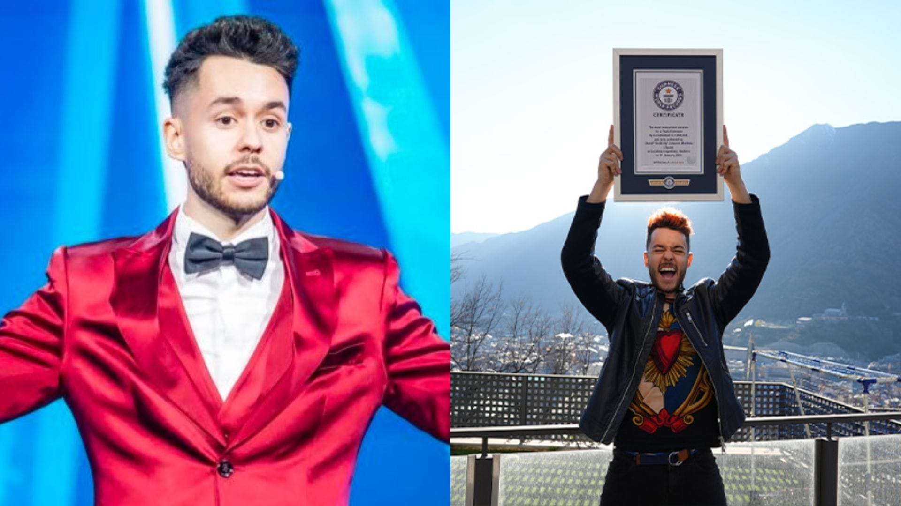
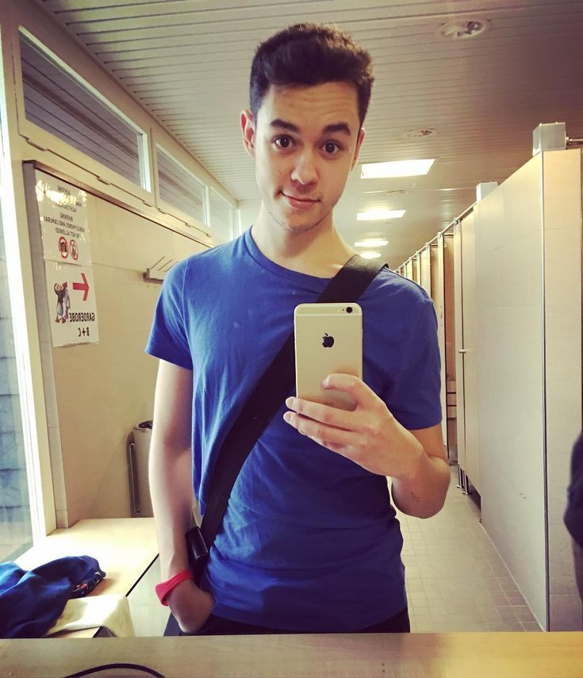

logros
Fanzone y curiosidades
Biografía Thegrefg
David Cánovas Martínez (Alhama de Murcia, 24 de abril de 1997), conocido artísticamente como TheGrefg o simplemente Grefg, es un youtuber y streamer español. Apareció en los Libro Guinness de los récords por el mayor número de espectadores simultáneos en una retransmisión de Twitch, con un pico de alrededor de 2 millones espectadores simultáneos durante la presentación en directo de su propia skin de Fortnite, el 11 de enero de 2021.

